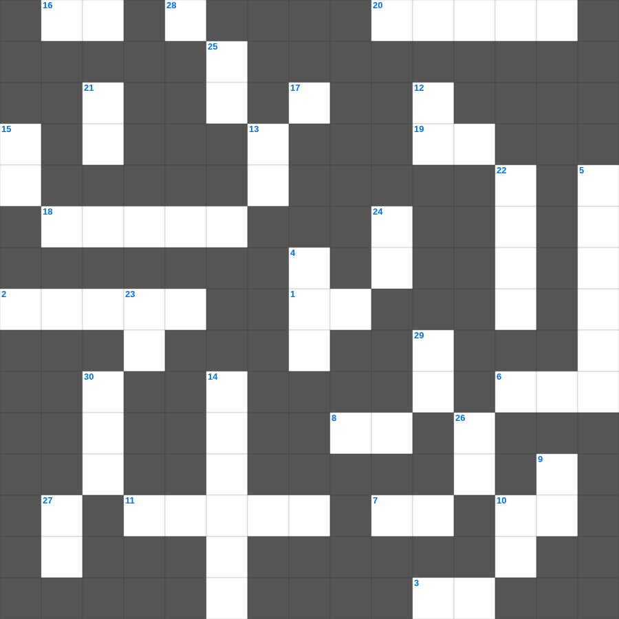

에스겔 마스터 100 (2/2)
📌 서비스 정의
십자가로세로는 교회 주보와 주일학교에서 사용할 수 있는 성경 기반 가로세로 퍼즐 서비스입니다. 성경 인물, 사건, 핵심 구절을 바탕으로 제작되었습니다. 온라인 풀이 및 인쇄 기능을 제공합니다.
📖 에스겔란?
에스겔은 바벨론 포로 중 받은 환상들을 통해 유다의 심판과 회복, 새 성전과 새 마음에 대한 약속을 전한 예언서입니다.
📚 에스겔의 주요 사건·주제
에스겔의 부르심과 소명 · 예루살렘 멸망 예언 · 마른 뼈가 살아나는 환상(에스겔 37장) · 새 성전 환상 · 이스라엘의 회복 예언
에스겔를 주제로 한 에스겔 말씀 퀴즈입니다. 35개의 단어를 맞춰보세요! 가로세로 낱말 퍼즐 형식으로 에스겔의 핵심 내용을 재미있게 복습할 수 있습니다.

📝 가로 힌트
1. 이스라엘은 흩어진 이것이라 사자들이 그를 따르도다
1. 깨끗한 자들에게는 모든 것이 깨끗하나 더럽고 믿지 아니하는 자들에게는 아무것도 깨끗한 것이 없고 오직 그들의 마음과 이것이 더러운지라
2. 아사 왕이 평안할 때 세운 것
3. 다니엘이 환상을 보고 몸에 힘이 빠졌을 때 그를 만져 강건하게 한 존재
6. 웃시야가 제사장의 직분을 침범했을 때 그를 막은 제사장 수
7. 사흘 만에 다시 살아나신 기적
8. 사도의 표가 된 것은 내가 너희 가운데서 모든 참음과 표적과 기사와 이것을 행한 것이라
10. 베드로의 그림자라도 덮이기를 바랐던 사람들이 병든 자를 메고 나온 곳
11. 아이들아 지금은 마지막 때라 이것이 오리라는 말을 너희가 들은 것과 같이 지금도 많은 이것이 일어났으니
13. 바울은 자기의 유익하던 모든 것을 그리스도를 위하여 이것으로 여긴다 함
16. 빌레몬이 주 예수와 및 모든 성도에 대하여 가진 이것과 사랑을 들음이네
18. 하박국의 이름 뜻
19. 왕이 유다 왕 여호야긴의 머리를 들어 주었고 죄수의 이것을 벗겨 주었더라
20. 바울의 동역자 부부 중 아내
23. 바울이 디도에게 지시한 장로 임명 방식: 각 이것에 장로들을 세우라
28. 죽고 사는 것이 이것의 힘에 달렸나니 이것을 쓰기 좋아하는 자는 이것의 열매를 먹으리라
📝 세로 힌트
1. 조용히 일하여 자기 이것을 먹으라 하노라
4. 죄를 범한 제사장들이 속죄제로 드린 동물
5. 히스기야의 기도를 듣고 하나님이 하룻밤에 죽인 군사 수
9. 보아스가 성문에서 만난 사람 '아무개여 이것으로 오라'
10. 사랑에는 이것이 없나니 악을 미워하고 선에 속하라
12. 헤롯의 누룩과 바리새인들의 누룩을 이것하라
13. 역대기가 마무리되며 소망을 주는 선포
14. 나의 복음과 같이 다윗의 씨로 죽은 자 가운데서 다시 살아나신 이것을 기억하라
15. 다니엘이 본 환상 중 바다에서 나온 네 이것
17. 사람이 마음으로 믿어 의에 이르고 이것으로 시인하여 구원에 이르느니라
21. 아무것도 이것하지 말고 다만 모든 일에 기도와 간구로, 너희 구할 것을 감사함으로 하나님께 아뢰라
22. 다윗이 예루살렘에서 다스린 기간
23. 소망이 우리를 부끄럽게 하지 아니함은 우리에게 주신 이것으로 말미암아 하나님의 사랑이 우리 마음에 부은 바 됨이니
24. 그 안에는 지혜와 지식의 모든 이것이 감추어져 있느니라
25. 포도나무 비유: 나를 떠나서는 너희가 아무것도 할 수 이것이라
26. 요한이서 1장 11절: 인사하는 자는 그 악한 일에 무엇하는 자인가
27. 미련한 자는 지혜와 이것을 멸시하느니라
29. 너희가 이미 배부르며 이미 이것하며 우리 없이도 왕이 되었도다
30. 최후의 만찬에서 떡과 포도주를 나누심
🧩 이 퍼즐에서 배우는 내용
이 퍼즐은 에스겔 마스터 100 (2/2)의 핵심 단어와 개념을 자연스럽게 복습할 수 있도록 구성되었습니다. 주일학교 수업이나 개인 성경공부에서 학습 내용을 점검하는 용도로 바로 활용할 수 있습니다.
🧑🏫 교회 교육 자료 활용
이 퍼즐은 주일학교 교재 추천 자료로 활용할 수 있고, 주일학교 주보에 넣기 좋은 분량으로 구성되어 있습니다. 수업용 주일학교 교안에 활동지로 붙이거나, 예배 후 복습용 주일학교 공과교재로 바로 사용할 수 있습니다.
🏷️ 키워드
에스겔 말씀 퀴즈, 에스겔, 십자가로세로, 성경퀴즈, 말씀퀴즈, 가로세로퍼즐, 주일학교 교재 추천, 주일학교 주보, 주일학교 교안, 주일학교 공과교재